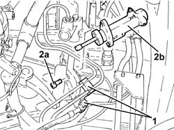
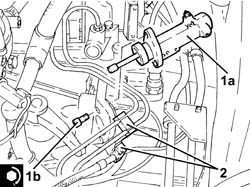

2127C45 CLUTCH OPERATING CYLINDER, of electrohydraulic selection - R.R .
- Path
- Procedures > 21 GEARBOX > 2127 ELECTRO-HYDRAULIC SELECTION. GEARBOX EXTERNAL. CONTROLS > 2127C hydraulic gear selection system > 2127C45 CLUTCH OPERATING CYLINDER, of electrohydraulic selection - R.R .
- Kind
- repair procedure (removal / refitting; the operation number is the code)
- Applies to
- engines: 3.2 V6; all production periods
- Interactive page
- https://sloeber94.github.io/elrnDB-a147/en/#/3025165
Applies to: engines: 3.2 V6; all production periods; only with equipment: Cambio robotizzato
 Removing
Removing
 Refitting
RefittingConnect the Examiner diagnostic equipment.
Select 'Alfa 147 speed' on the Examiner.
Select 'Control Unit Test' on the Examiner and select the 'Marelli Selespeed Automatic Transmission'.
Press 'Active Diagnosis' on the Examiner and select 'Accumulator depressurizing'.
Continue with the procedure on the Examiner.
Proceed with removal 5530B10 battery - r+r .
Proceed with removal 5530B52 Battery DRIP TRAY/SUPPORT - R.R. .
Proceed with removal 1048A10 air cleaner filtering element - replace .
Proceed with removal 2127E44 hydraulic selection gearbox clutch position sensor - r r .
Proceed with removal 2127C28 PIPE FROM CLUTCH ENGAGEMENT SOLENOID VALVE TO CLUTCH HYDRAULIC ACTUATOR - R.R. .
1. Release the pipes from the retaining bands on the clutch actuator cylinder.
2. Undo the bolts (2a) and remove the clutch actuator cylinder (2b).

Applies to: engines: 3.2 V6; all production periods; only with equipment: Cambio robotizzato
Refitting
Removing1. Place the clutch actuator cylinder (1a) back in its housing and secure it tightening the bolts (1b) to the recommended torque.
 | Fastening | Component | Ø | Value (daNm) |
|---|---|---|---|---|
1b | Bolt | CLUTCH ACTUATOR CYLINDER | M8 | (Gearbox side) 2.3 ÷ 2.8 |
2. Fasten the pipes to the retaining bands on the clutch actuator cylinder.

Applies to: engines: 3.2 V6; all production periods; only with equipment: Cambio robotizzato
.Proceed with refitting 2127C28 PIPE FROM CLUTCH ENGAGEMENT SOLENOID VALVE TO CLUTCH HYDRAULIC ACTUATOR - R.R. .
.Proceed with refitting 2127E44 hydraulic selection gearbox clutch position sensor - r r .
.Proceed with refitting 1048A10 air cleaner filtering element - replace .
.Proceed with refitting 0010T47 hydraulic system fluid for gearbox with hydraulic selection check level and top up if necessary .
.Proceed with refitting 0010T48 hydraulic system for gearbox with hydraulic selection bleed air .
.Proceed with refitting 5530B52 Battery DRIP TRAY/SUPPORT - R.R. .
.Proceed with refitting 5530B10 battery - r+r .
Topics linked from this page (7)
- 0010T47 hydraulic system fluid for gearbox with hydraulic selection check level and top up if necessary
- 0010T48 hydraulic system for gearbox with hydraulic selection bleed air
- 1048A10 air cleaner filtering element - replace
- 2127C28 PIPE FROM CLUTCH ENGAGEMENT SOLENOID VALVE TO CLUTCH HYDRAULIC ACTUATOR - R.R.
- 2127E44 hydraulic selection gearbox clutch position sensor - r r
- 5530B10 battery - r+r
- 5530B52 Battery DRIP TRAY/SUPPORT - R.R.